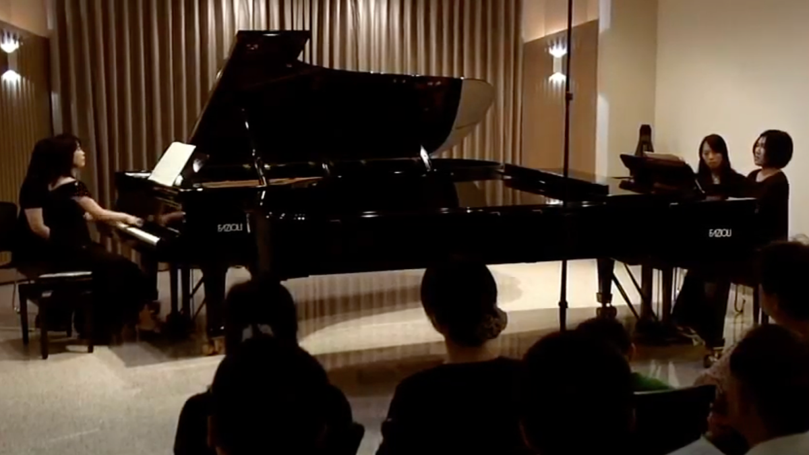

Passionate chamber musician for live performances and recording sessions, music arranger, and transcription specialists for hire in Taiwan

Recital with Ting-Wei Chen, principal flute of Oslo Philharmonic Orchestra. Lecturer of MDW Vienna
André Jolivet: Chant de Linos
Watch
Recital with Yu-Ting Chen, violinist of The Philadelphia Orchestra
Richard Strauss: Sonata in E-flat major, Op. 18
Watch
Recital with Serena Huang, concert violinist
Ludwig van Beethoven: Violin Sonata in C minor, Op. 30, No. 2
Watch
String quartet with Nancy Zhou, Boris Borgolotto, and Marc Girard Garcia
Felix Mendelssohn: The String Quartet No. 2 in a minor, Op. 13
WatchPiano duo with Giselle Hsin, concert pianist
M. Ravel: La Valse for 2 pianos
Watch More about our Artistic Director
Taiwanese violist/violinist/pianist Canglah Micyang (previously Phyllis Yen) made her concerto debut at the age of 9 in Kaohsiung City Cultural Centre in the Yamaha Annual Celebration Concert as a pianist. Since then, she has undergone serious conservatory-level training in music schools and has been awarded several top prizes in National Music Competitions in pre-college years both as pianist and violinist. She obtained her master of performance from the Institute of Music, National Chiao Tung University in Taiwan as a recipient of the prestigious ZyXEL scholarship.
She actively appears onstage both as violist, pianist and violinist. In 2012, she gave the Taipei-premiere performance of Luciano Berio’s Sequenza VIII for solo violin. She has also appeared as both soloist and chamber musician in Asian Composers League Conference & Festival (2011), Taipei International New Music Festival (2012, 2013), ChiaoTa Chamber Ensemble (2012), Burapha Music and Performing Arts International Festival (2013) in Thailand, and the Great Mountains Music Festival & School (2013, 2014) in Korea, the Kneisel Hall Chamber Music School & Festival (2015) in the United States, and the Moritzburg Festival Orchestra (2016) in Germany.
An active chamber musician, Ms Yen has collaborated with such musicians as violist Hsin-Yun Huang (faculty, the Juillard School), violinist Nancy Zhou, Belle Ting, Sirena Huang, Richard Lin, Yu-Ting Chen, and flutist Ting-Wei Chen, just to name a few.
She has studied or participated in masterclasses with violinists Dora Schwarzberg, Qian Zhou, Vesselin Paraschkevov, Jonathan Crow, Ik-Hwan Bae, Krzysztof Wegrzyn, Ani Kavafian, Laurie Smukler, Kai Vogler, Valeriy Sokolov, cellist Li-Wei Qin, Jan Vogler, Joel Krosnick, along with violists Hsin-Yun Huang, Paul Neubauer, Katherine Murdock, Maxim Rysanov, Paul Silverthorne and Hungwei Huang. In 2015, under the invitation of Ms Laurie Smukler, she was invited to study viola performance with full fellowship in the Bard College Conservatory of Music, New York, which she subsequently turned down.
Canglah also composes and makes arrangements in her spare time. Her orchestral arrangements have been performed by the Evergreen Symphony Orchestra and National Taiwan Symphony Orchestra. She occasionally acts as a score editor for video games with composer Chamber Chu, such as the beloved “DEEMO -Reborn- OST”.
Canglah has recently participated in the recording of films, games, and singles, including "Finding The Path Of Eternity With You" 《陪你揣永遠》 by Since Chou（周自從）, the album "Roots"《結》 by The Youths of the Sea Island（海島青年實驗室）, the Netflix Taiwanese drama Trade War《商魂》, and served as a recording musician and organizer for the following projects: the video game soundtrack for Deemo 4, the game The Star Named EOS《未曉星程》, the original soundtrack for Nine Sols《九日》 by Red Candle（赤燭遊戲）, the crime action film Organ Girl《器子》, the documentary "Taiwan Unsung Hero"《台灣超人》, and the film "Where the River Flows"《搜查瑠公圳》 as a recording musician and coordinator.
In addition to her musical achievements, Canglah holds a bachelor degree in Physics and a master in Astronomy from National Tsing Hua University. She won the “Be An Integral Astronomer” competition held by the European Space Agency, and obtained a fellowship to study in the Theory Group in the Mullard Space Science Laboratory, University College London. Her scientific publications can be found in several scientific journals. She previously worked at Bank of America Merrill Lynch and is now a senior engineer at NVIDIA.
Canglah has freelanced with the Metropolitan Festival Orchestra in Singapore and the Malaysian Philharmonic Orchestra.